import numpy as np
import pandas as pd
import scanpy as sc
# !mkdir data
# !wget http://cf.10xgenomics.com/samples/cell-exp/1.1.0/pbmc3k/pbmc3k_filtered_gene_bc_matrices.tar.gz -O data/pbmc3k_filtered_gene_bc_matrices.tar.gz
# !cd data; tar -xzf pbmc3k_filtered_gene_bc_matrices.tar.gz
# !mkdir write
sc.settings.verbosity = 3 # verbosity: errors (0), warnings (1), info (2), hints (3)
sc.logging.print_header()
sc.settings.set_figure_params(dpi=80, facecolor='white')
scanpy==1.6.1 anndata==0.7.5 umap==0.4.6 numpy==1.19.2 scipy==1.5.2 pandas==1.2.1 scikit-learn==0.23.2 statsmodels==0.12.1 python-igraph==0.8.3 leidenalg==0.8.3
results_file = 'write/pbmc3k.h5ad' # the file that will store the analysis results
adata = sc.read_10x_mtx(
'filtered_gene_bc_matrices/hg19/', # the directory with the `.mtx` file
var_names='gene_symbols', # use gene symbols for the variable names (variables-axis index)
cache=True) # write a cache file for faster subsequent reading
... writing an h5ad cache file to speedup reading next time
adata.var_names_make_unique() # this is unnecessary if using `var_names='gene_ids'` in `sc.read_10x_mtx`
adata.obs
.dataframe tbody tr th {
vertical-align: top;
}
.dataframe thead th {
text-align: right;
}
sc.pl.highest_expr_genes(adata, n_top=20, )
normalizing counts per cell
finished (0:00:00)
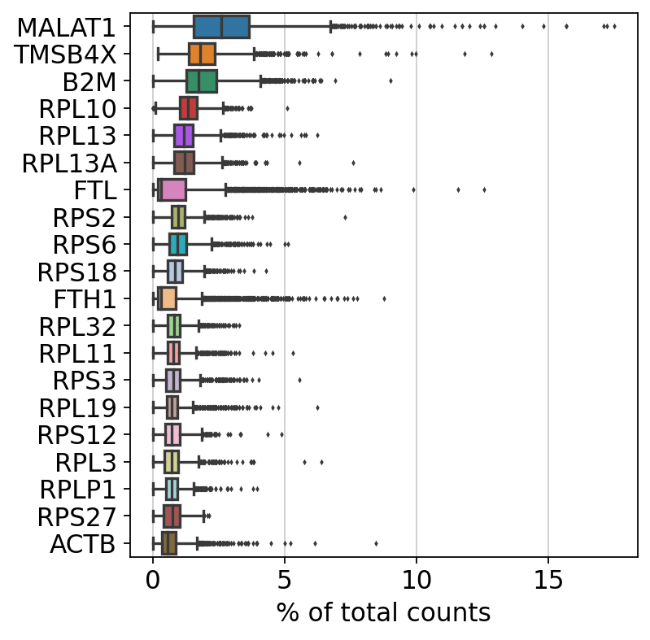
sc.pp.filter_cells(adata, min_genes=200)
sc.pp.filter_genes(adata, min_cells=3)
filtered out 19024 genes that are detected in less than 3 cells
adata.var['mt'] = adata.var_names.str.startswith('MT-') # annotate the group of mitochondrial genes as 'mt'
sc.pp.calculate_qc_metrics(adata, qc_vars=['mt'], percent_top=None, log1p=False, inplace=True)
sc.pl.violin(adata, ['n_genes_by_counts', 'total_counts', 'pct_counts_mt'],
jitter=0.4, multi_panel=True)
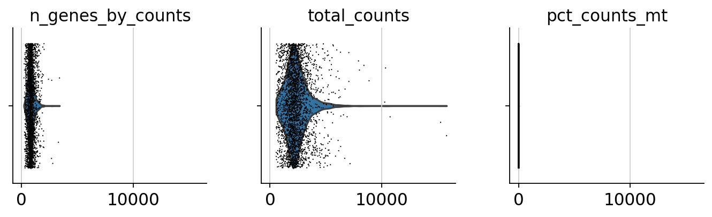
sc.pl.scatter(adata, x='total_counts', y='pct_counts_mt')
sc.pl.scatter(adata, x='total_counts', y='n_genes_by_counts')
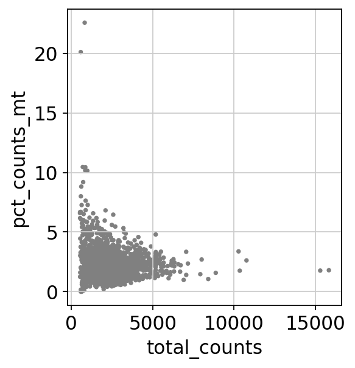
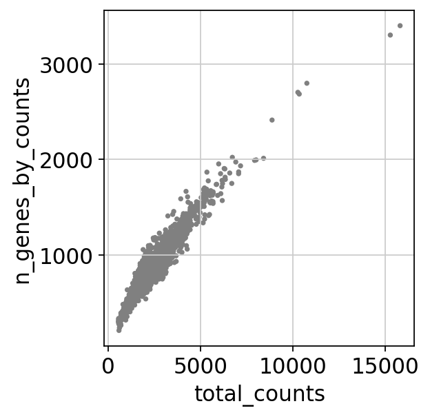
adata = adata[adata.obs.n_genes_by_counts < 2500, :]
adata = adata[adata.obs.pct_counts_mt < 5, :]
sc.pp.normalize_total(adata, target_sum=1e4)
normalizing counts per cell
finished (0:00:00)
view_to_actual(adata)
sc.pp.log1p(adata)
sc.pp.highly_variable_genes(adata, min_mean=0.0125, max_mean=3, min_disp=0.5)
extracting highly variable genes
finished (0:00:00)
--> added
'highly_variable', boolean vector (adata.var)
'means', float vector (adata.var)
'dispersions', float vector (adata.var)
'dispersions_norm', float vector (adata.var)
sc.pl.highly_variable_genes(adata)
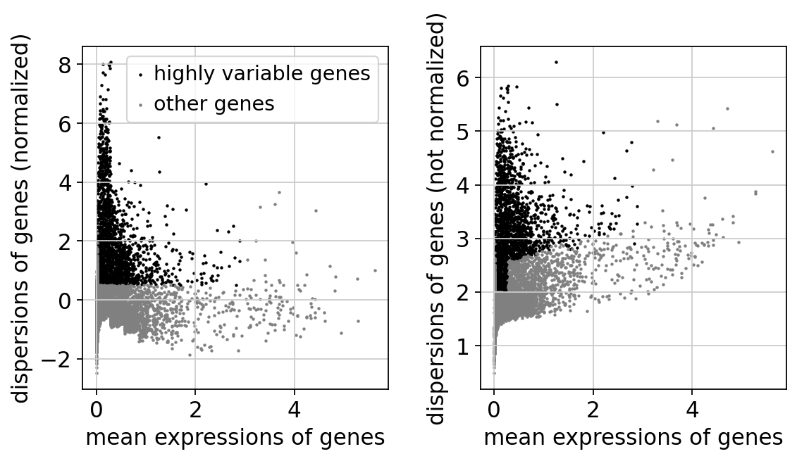
adata.raw = adata
adata = adata[:, adata.var.highly_variable]
sc.pp.regress_out(adata, ['total_counts', 'pct_counts_mt'])
regressing out ['total_counts', 'pct_counts_mt']
sparse input is densified and may lead to high memory use
finished (0:00:08)
sc.pp.scale(adata, max_value=10)
sc.tl.pca(adata, svd_solver='arpack')
computing PCA
on highly variable genes
with n_comps=50
finished (0:00:00)
sc.pl.pca(adata, color='CST3')
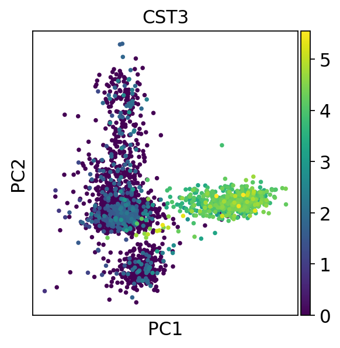
sc.pl.pca_variance_ratio(adata, log=True)
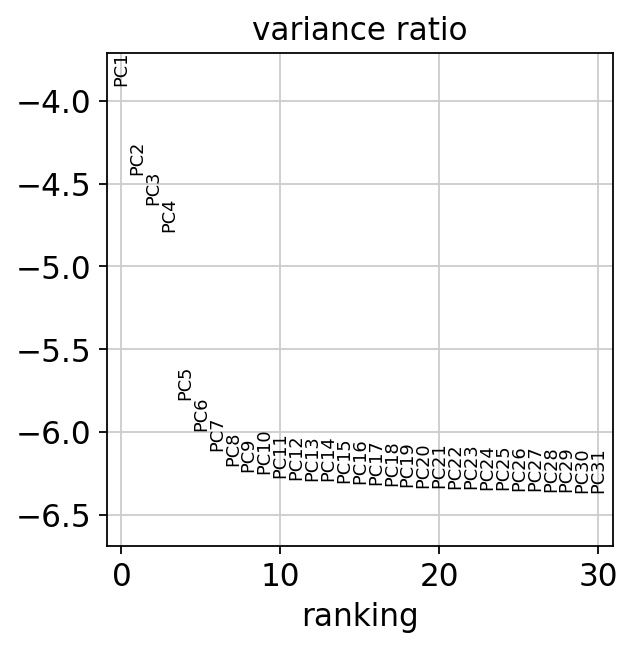
adata.write(results_file)
adata
AnnData object with n_obs × n_vars = 2638 × 1838
obs: 'n_genes', 'n_genes_by_counts', 'total_counts', 'total_counts_mt', 'pct_counts_mt'
var: 'gene_ids', 'n_cells', 'mt', 'n_cells_by_counts', 'mean_counts', 'pct_dropout_by_counts', 'total_counts', 'highly_variable', 'means', 'dispersions', 'dispersions_norm', 'mean', 'std'
uns: 'log1p', 'hvg', 'pca'
obsm: 'X_pca'
varm: 'PCs'
sc.pp.neighbors(adata, n_neighbors=10, n_pcs=40)
computing neighbors
using 'X_pca' with n_pcs = 40
finished: added to `.uns['neighbors']`
`.obsp['distances']`, distances for each pair of neighbors
`.obsp['connectivities']`, weighted adjacency matrix (0:00:01)
sc.tl.umap(adata)
computing UMAP
finished: added
'X_umap', UMAP coordinates (adata.obsm) (0:00:03)
sc.pl.umap(adata, color=['CST3', 'NKG7', 'PPBP'])
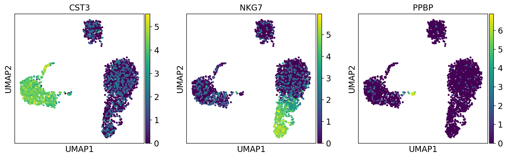
sc.pl.umap(adata, color=['CST3', 'NKG7', 'PPBP'], use_raw=False)
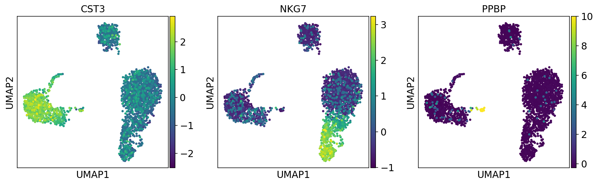
sc.tl.leiden(adata)
running Leiden clustering
finished: found 8 clusters and added
'leiden', the cluster labels (adata.obs, categorical) (0:00:00)
sc.pl.umap(adata, color=['leiden', 'CST3', 'NKG7'])

adata.write(results_file)
sc.tl.rank_genes_groups(adata, 'leiden', method='t-test')
sc.pl.rank_genes_groups(adata, n_genes=25, sharey=False)
ranking genes
finished: added to `.uns['rank_genes_groups']`
'names', sorted np.recarray to be indexed by group ids
'scores', sorted np.recarray to be indexed by group ids
'logfoldchanges', sorted np.recarray to be indexed by group ids
'pvals', sorted np.recarray to be indexed by group ids
'pvals_adj', sorted np.recarray to be indexed by group ids (0:00:00)
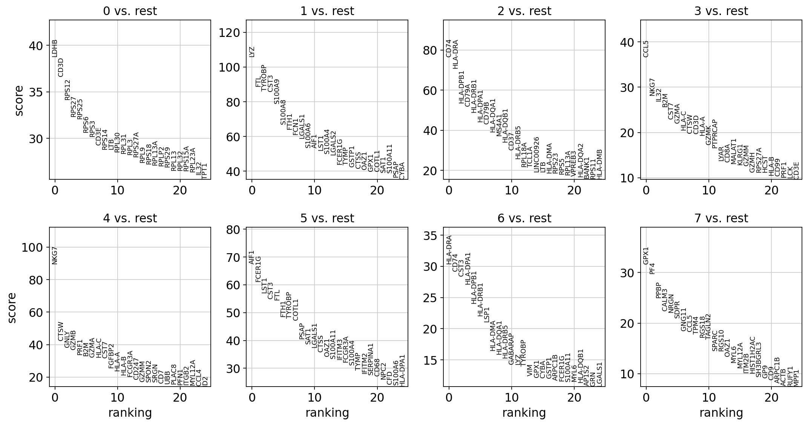
sc.settings.verbosity = 2 # reduce the verbosity
sc.tl.rank_genes_groups(adata, 'leiden', method='wilcoxon')
sc.pl.rank_genes_groups(adata, n_genes=25, sharey=False)
ranking genes
finished (0:00:03)
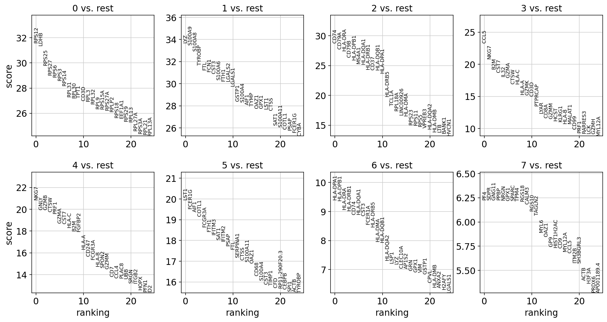
adata.write(results_file)
sc.tl.rank_genes_groups(adata, 'leiden', method='logreg')
sc.pl.rank_genes_groups(adata, n_genes=25, sharey=False)
ranking genes
finished (0:00:05)
Increase the number of iterations (max_iter) or scale the data as shown in:
https://scikit-learn.org/stable/modules/preprocessing.html
Please also refer to the documentation for alternative solver options:
https://scikit-learn.org/stable/modules/linear_model.html#logistic-regression
n_iter_i = _check_optimize_result(
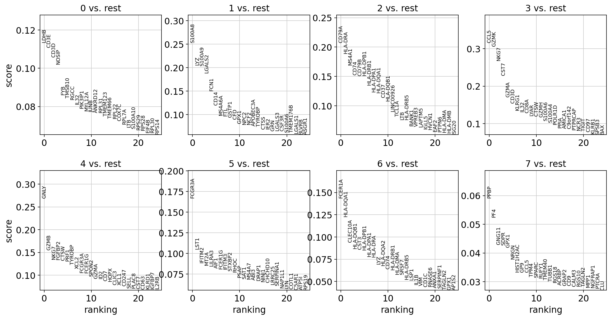
marker_genes = ['IL7R', 'CD79A', 'MS4A1', 'CD8A', 'CD8B', 'LYZ', 'CD14',
'LGALS3', 'S100A8', 'GNLY', 'NKG7', 'KLRB1',
'FCGR3A', 'MS4A7', 'FCER1A', 'CST3', 'PPBP']
adata = sc.read(results_file)
pd.DataFrame(adata.uns['rank_genes_groups']['names']).head(5)
.dataframe tbody tr th {
vertical-align: top;
}
.dataframe thead th {
text-align: right;
}
result = adata.uns['rank_genes_groups']
groups = result['names'].dtype.names
pd.DataFrame(
{group + '_' + key[:1]: result[key][group]
for group in groups for key in ['names', 'pvals']}).head(5)
.dataframe tbody tr th {
vertical-align: top;
}
.dataframe thead th {
text-align: right;
}
sc.tl.rank_genes_groups(adata, 'leiden', groups=['0'], reference='1', method='wilcoxon')
sc.pl.rank_genes_groups(adata, groups=['0'], n_genes=20)
ranking genes
finished (0:00:01)
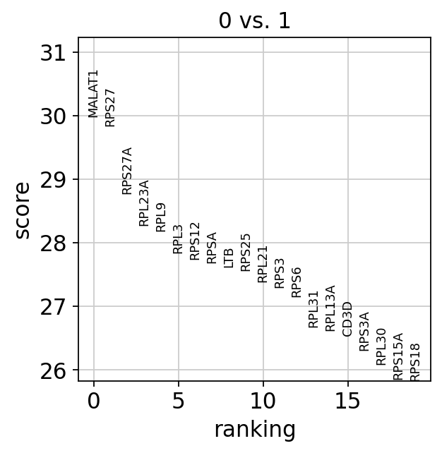
sc.pl.rank_genes_groups_violin(adata, groups='0', n_genes=8)
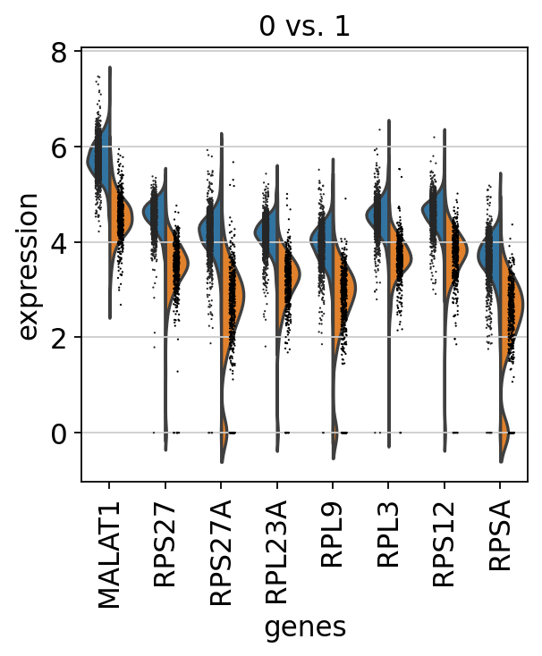
sc.pl.rank_genes_groups_violin(adata, groups='0', n_genes=8)
sc.pl.violin(adata, ['CST3', 'NKG7', 'PPBP'], groupby='leiden')
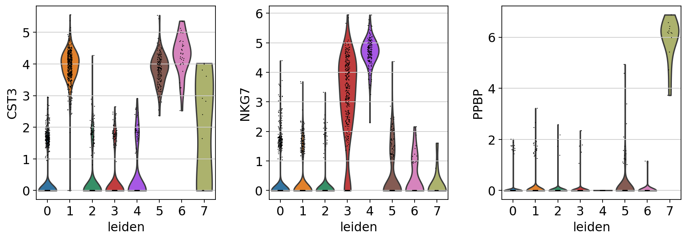
new_cluster_names = [
'CD4 T', 'CD14 Monocytes',
'B', 'CD8 T',
'NK', 'FCGR3A Monocytes',
'Dendritic', 'Megakaryocytes']
adata.rename_categories('leiden', new_cluster_names)
Omitting rank_genes_groups/names as old categories do not match.
Omitting rank_genes_groups/scores as old categories do not match.
Omitting rank_genes_groups/pvals as old categories do not match.
Omitting rank_genes_groups/pvals_adj as old categories do not match.
Omitting rank_genes_groups/logfoldchanges as old categories do not match.
sc.pl.umap(adata, color='leiden', legend_loc='on data', title='', frameon=False, save='.pdf')
WARNING: saving figure to file figures/umap.pdf
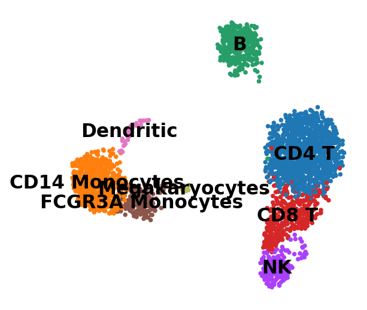
sc.pl.dotplot(adata, marker_genes, groupby='leiden');
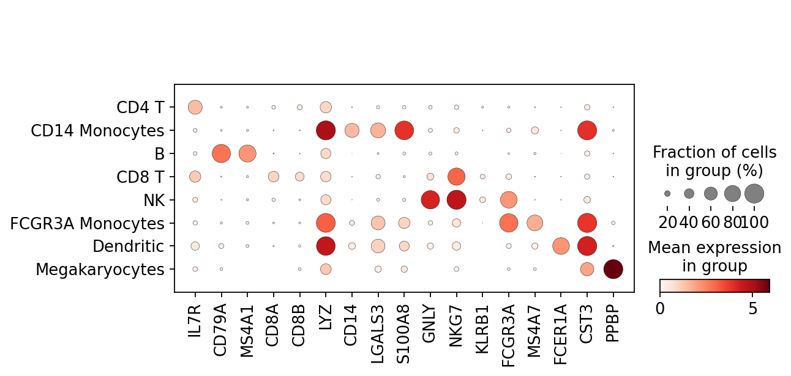
sc.pl.stacked_violin(adata, marker_genes, groupby='leiden', rotation=90);
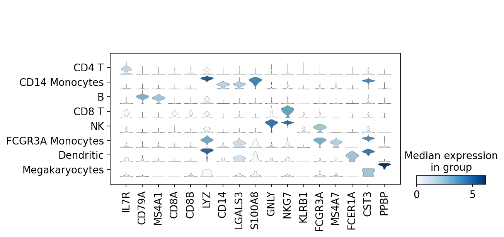
adata.write(results_file, compression='gzip') # `compression='gzip'` saves disk space, but slows down writing and subsequent reading
adata.raw.to_adata().write('./data/write/pbmc3k_withoutX.h5ad')